rsync is a complex but very useful file syncing tool which is very useful when making backups or mirroring directories anyhwhere in the linux world.
rsync doesn't performs simple copy, it syncs files. Here synching means that files will be copied if they don't exist or files have been changed in any way.
For local file synching
rsync [options] source destination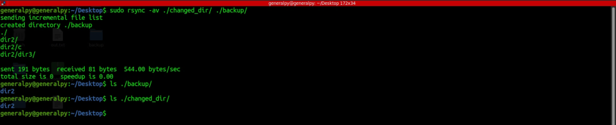
Here -a flag stands for archive and it is combination of multiple options(research yet to be done). It basically preserves every attribute of the file and dirs including symlinks. -v stands for verbose.
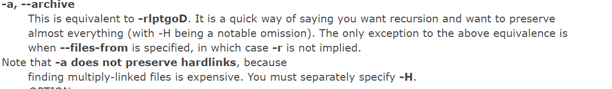
Let us try running same command again, no files have been changed.
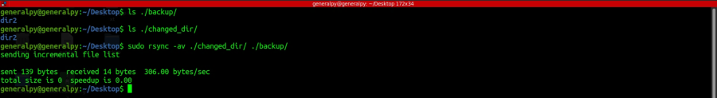
Nothing changed so nothing was copied.
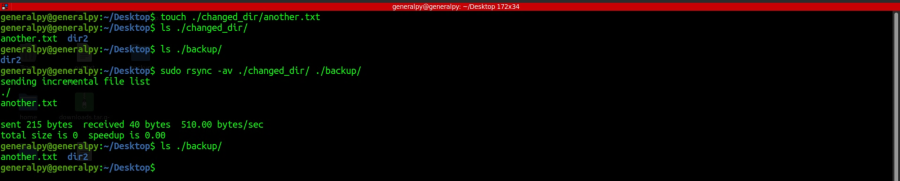
New file was created in source directory so it was copied.
We can also make rsync delete non existing source dir files in destination directory. Use --delete flag to do that.
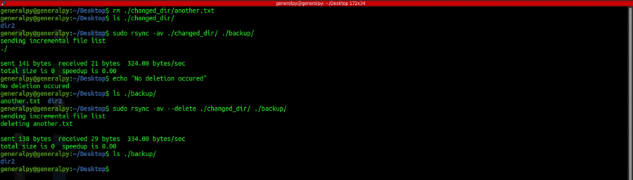
Note that trailing slash plays important role when using rsync. When we use trailing slash with a directory(like changed_dir/), contents of that directory are synced but when we don't use trailing slash, whole directory is synced.
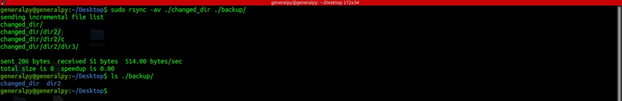
We can also exclude files and dirs from syncing using --exclude-from and --exclude flags. --exclude-from requires a file in which all items to be excluded are written whereas when using --exclude, we can specify to exclude individual items.
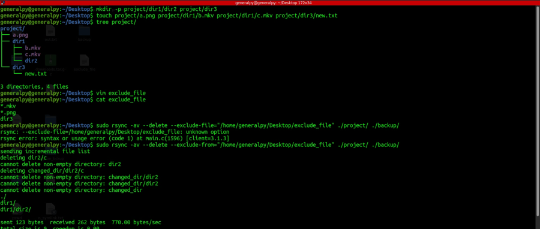
Note how dir3, mkv files and png files weren't copied.
We can also use --exclude="*.mkv" --exclude="*.png" --exclude="dir3" here if we don't want to use exclude file.
Use --delete-excluded to remove those non empty dirs.
Rsync can also be used to sync files over a remote server. We can use rsync to sync files, all we need is a ssh access to the remote machine.
User in local machine must have read access and user of remote machine must have write access for this to work.
rsync [options] -e ssh source dest
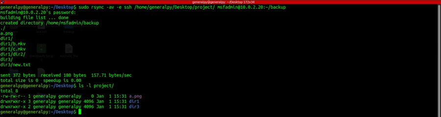
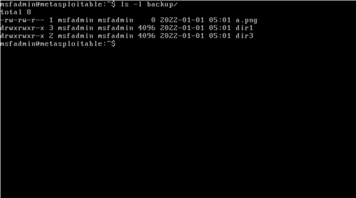
Same options are available as one with local rsync.
We can also use different port or even whole ssh commands. After -e, in quotes we can enter ssh commands.
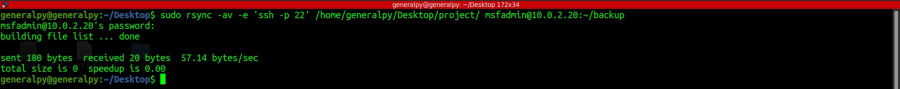
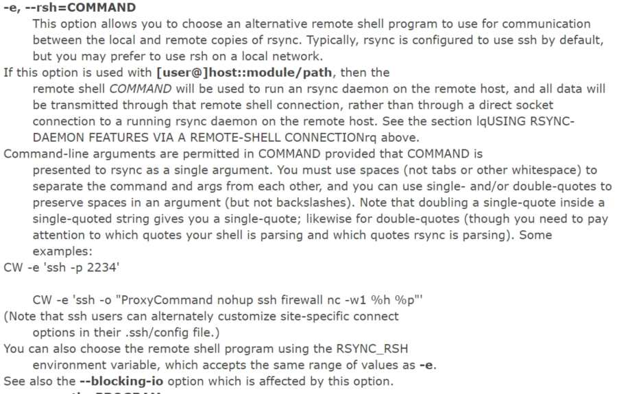